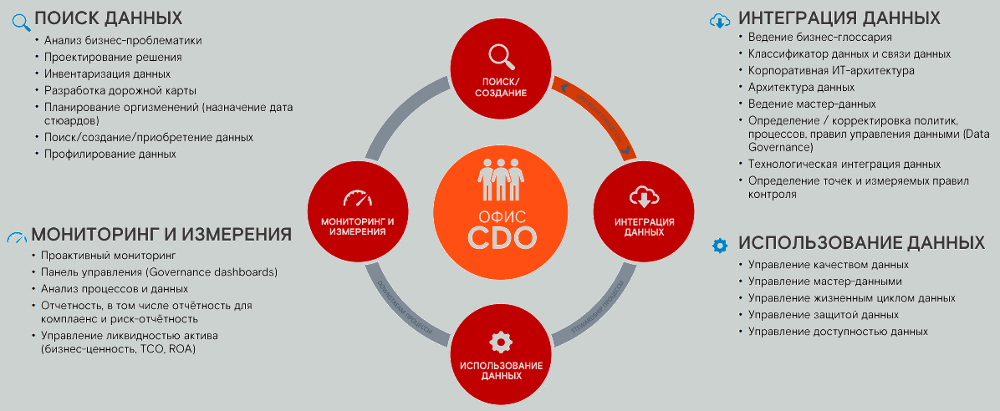
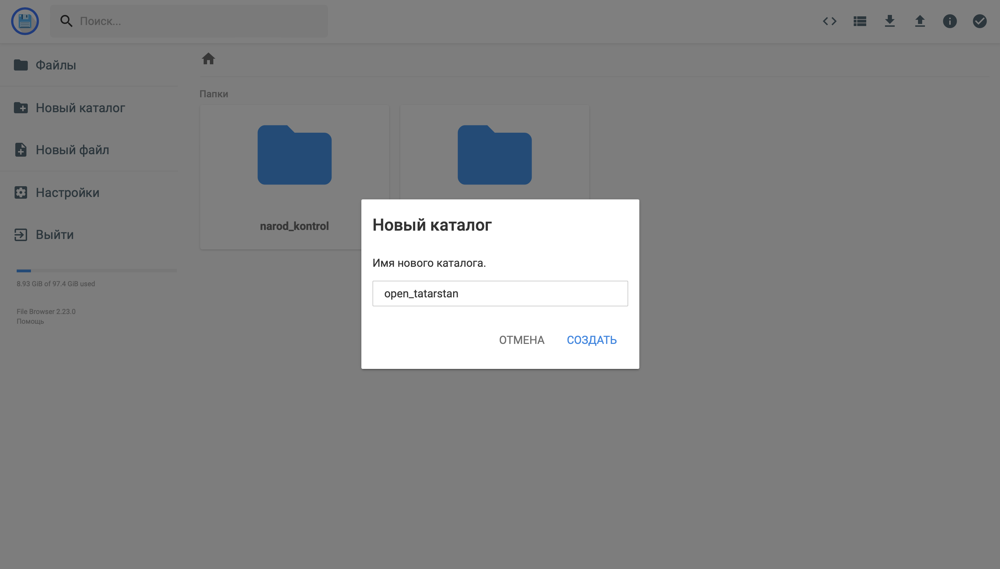
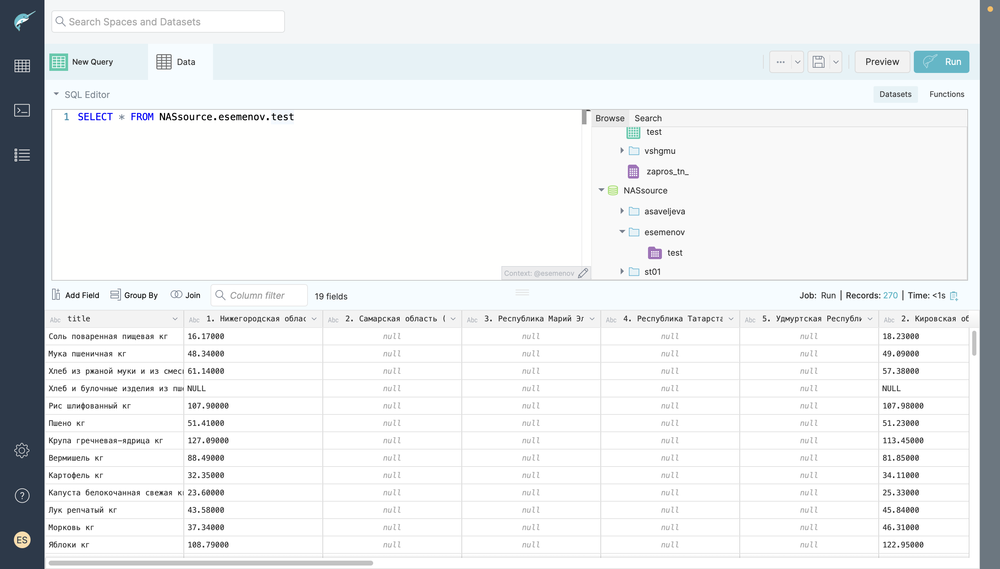
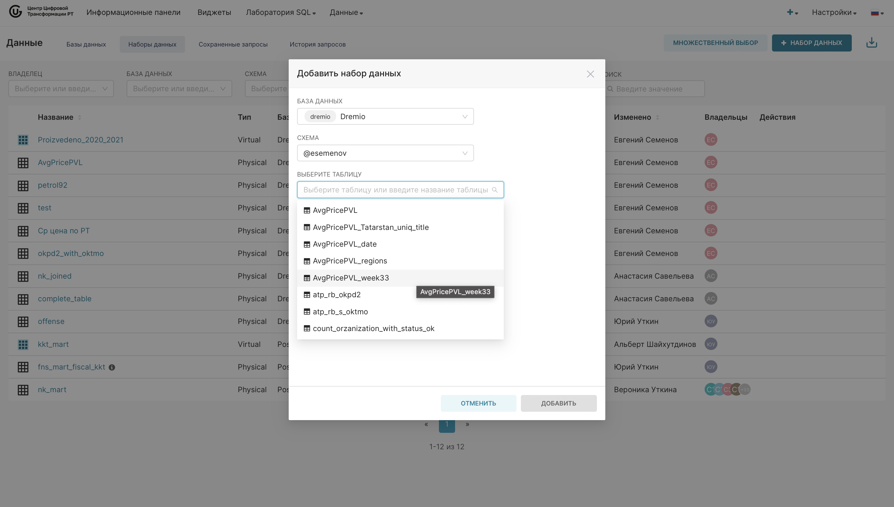
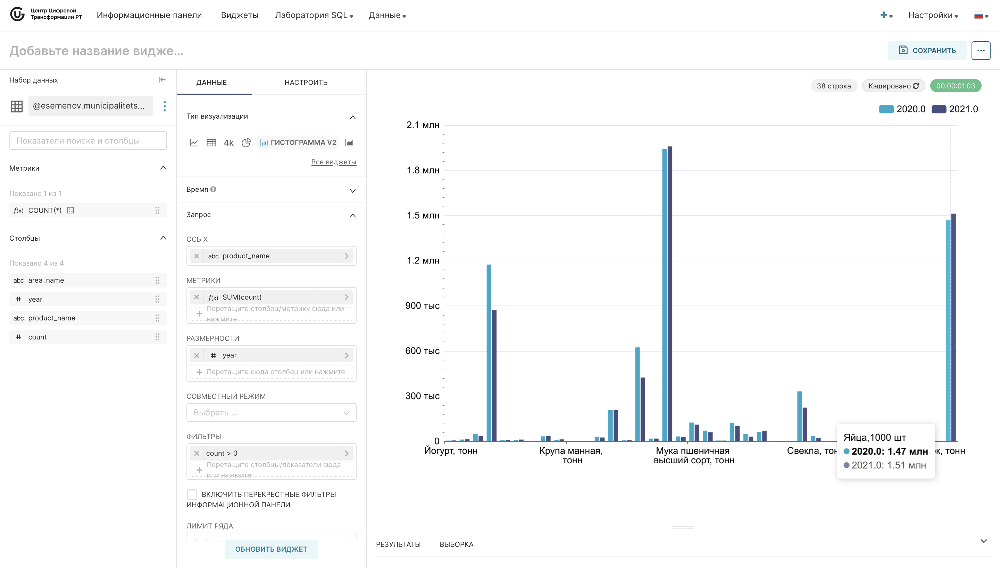
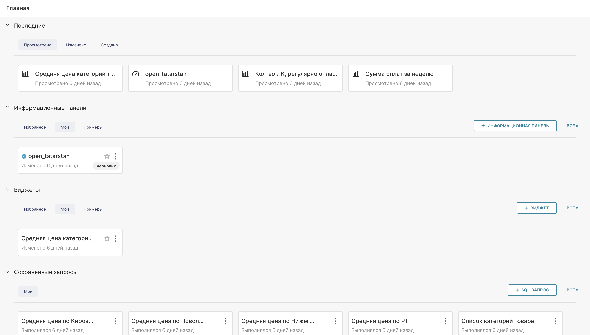
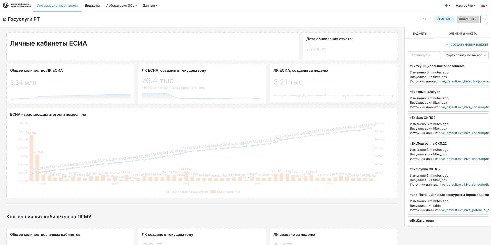

Стажировочная площадка · Казань · ИТ-парк имени Башира Рамеева
Стажировка государственных гражданских и муниципальных служащих Республики Татарстан · 18 ак.ч. · 12–13 октября 2026 г.
Программа
| Блок | Время | Формат |
|---|---|---|
| Культура работы с данными | 1 день · 09:10–09:45 | Лекция |
| Фабрика данных и SQL | 1 день · 10:00–13:15 | Лекция + практика |
| Визуализация данных | 1 день · 13:15–17:15 | Лекция + практика |
| Практический квест | 2 день · 09:00–15:00 | 2 команды |
| Итоги и закрытие | 2 день · 15:15–16:20 | Ответы на вопросы |
Раздел 01 · 09:10–09:45
Правила сбора и документирования наборов данных · платформа Внешней поставки данных ФНС РФ
Культура работы с данными · базовое различие
ДАННЫЕ
Поддающееся многократной интерпретации представление фактов и показателей в формализованном виде, пригодном для передачи, связи или обработки.
+16 °C · 12 марта · Казань
ИНФОРМАЦИЯ
Знания, полученные в результате анализа и интерпретации данных.
«Прохладно — надеть куртку»
Data Governance
Data Governance — процесс создания достоверных данных в масштабе организации и поддержания данных достоверными.
Почему это важно именно сейчас
Data Governance · цели
Data Governance · задачи
Инфографика · Data Management
Так концепцию описывает DAMA-DMBOK — свод знаний по управлению данными от международной некоммерческой ассоциации DAMA International. Вендор-независимый и накопивший опыт тысяч компаний, он описывает что нужно делать для эффективного управления данными, из каких областей состоит дисциплина и почему это важно.
Актуальная редакция DMBOK2 (2017) выделяет одиннадцать областей знаний. В центре — Data Governance: система решений, ролей и правил, которая направляет и контролирует все остальные области.
Концепция: DAMA-DMBOK2 (DAMA International, 2017); обзор — bigdataschool.ru
Кто управляет данными
Кто управляет изменениями
Правила сбора данных
Определение правил, стандартов и политик сбора данных — одна из фундаментальных задач CDO (Chief Data Officer / Директора по данным) в рамках управления всем жизненным циклом информации.
Правила формируются на этапе интеграции данных — вместе с бизнес-глоссарием, архитектурой данных и точками контроля.

Правила документирования наборов данных
Согласно концепции Data Governance (корпоративного управления данными), документирование наборов данных превращает разрозненную информацию в прозрачный, надёжный и управляемый ресурс.
Оно строится на единых стандартах фиксации метаданных, закреплении ролей и описании жизненного цикла.
Ролевая модель
Обязательный состав метаданных
Регистрация в каталоге данных
Актуализация и жизненный цикл
Раздел 01.2 · 09:10–09:45
Внешняя поставка данных: как органы власти получают сведения ФНС России
Что такое ВПД
Системная среда доступа к данным ФНС России: деперсонифицированные и агрегированные сведения для аналитики органов власти — без налоговой тайны.
Запущена в ноябре 2021 года в пилотном режиме. Официальный портал — vpd.nalog.gov.ru.
Платформа в цифрах
Функционал
Что поставляет ФНС
| Набор | Содержание |
|---|---|
| ККТ | Статистика онлайн-касс в разных разрезах |
| НПД | Аналитика по самозанятым |
| Налоги | Прибыль, имущество, транспортный налог, УСН, НДС |
| МСП | Сведения о малом и среднем бизнесе |
| 1-ЕНР | Статистическая налоговая отчётность |
| Кассовый план | Отчёты о начислениях для регионов |
| Нацпроекты | Разбивка показателей по субъектам РФ |
Публичный сервис на данных ВПД
Тепловая карта России из шестиугольников: агрегированные траты населения по чекам онлайн-касс.
Число наборов данных и сервисов
Порядок подключения
Соглашение № ЕД-23-19/2@; vpd.nalog.gov.ru/documents
Развитие
nalog.gov.ru (14.02.2024); Минпромторг РТ (2021)
Раздел 02 · 10:00–13:15
Обработка данных на платформе: компоненты, наборы данных, SQL, загрузка
«Татсфера» — платформа «данные как услуга»: быстро и легко получить доступ к данным, проанализировать их и извлечь полезную информацию.Обучающий материал лекции «Фабрика данных — быстрые данные для всех»
Архитектура платформы
Компоненты платформы
Компонент 1 · Браузер файлов

Компонент 2 · Дата-лаборатория

Дата-лаборатория
Раздел 03
Язык структурированных запросов · синтаксис, операторы, типы данных, функции
SQL
| Тип | Устройство |
|---|---|
| Простейшие | Файлы txt, csv и др.; поля разделены пробелом, табуляцией, запятой или точкой с запятой |
| Реляционные | Таблицы из строк и столбцов: в строках — значения свойств объектов, в столбцах — сами свойства |
| Нереляционные | Без табличной схемы строк и столбцов; модель хранения оптимизирована под тип данных |
SQL
SQL — декларативный язык: вы описываете, что нужно получить, а СУБД сама решает, как. Он удобочитаем и понятен даже новичкам. С его помощью можно:
SQL
SQL
SQL · каркас запроса
SELECT <список столбцов>
FROM <список таблиц>
[WHERE <условие выбора строк>]
[GROUP BY <условие группировки>]
[HAVING <условие выбора групп>]
[ORDER BY <условие сортировки>]
[LIMIT N]SQL · фильтрация
SELECT * FROM AvgPricePVL WHERE "week" = 33;
SELECT * FROM AvgPricePVL WHERE "week" BETWEEN 33 AND 34;
SELECT * FROM AvgPricePVL WHERE "week" IN (31, 32, 33);
SELECT * FROM AvgPricePVL WHERE "title" LIKE 'Мука пшеничная кг';
SELECT * FROM "Ср цена по РТ" WHERE "Ср. цена по РТ" IS NULL;
SELECT * FROM AvgPricePVL WHERE "title" = 'Мука пшеничная кг' AND "week" = 33;Условия: равенство, неравенство, диапазон BETWEEN, список IN, шаблон LIKE, пустое значение IS NULL; комбинации через AND и OR.
SQL · базовые элементы запросов
SELECT DISTINCT("title"), AVG("Республика Татарстан") AS "Респ. Татарстан"
FROM AvgPricePVL
GROUP BY "title";DISTINCT выбирает только уникальные значения (без повторов) перечисленных в SELECT столбцов. Задать его можно только один раз для одного предложения SELECT.
SQL · группировка
SELECT DISTINCT("title"), AVG("Республика Татарстан") AS "Респ. Татарстан"
FROM AvgPricePVL
GROUP BY "title"
HAVING AVG("Республика Татарстан") > 100
ORDER BY "title" DESC
LIMIT 5;WHERE отсекает строки до группировки, HAVING — группы после и может содержать агрегатные функции. ORDER BY сортирует, DESC — наоборот, LIMIT оставляет первые N строк.
SQL · функции
Агрегатные функции вычисляют «возвращаемый столбец числовых данных» из SELECT: суммируют результаты конкретного столбца выбранных данных. Все они игнорируют значения NULL и детерминированы — всегда возвращают одинаковый результат для одинаковых входных значений.
| Функция | Возвращает |
|---|---|
| COUNT() | Количество записей; COUNT(*) — всех строк таблицы |
| AVG() | Среднее значение числового столбца |
| MIN() / MAX() | Минимальное и максимальное значение столбца |
| SUM() | Сумму значений числового столбца |
SQL · функции
Строковые функции выполняют операции со строковыми значениями и возвращают числовые либо строковые значения: комбинировать данные, извлекать подстроку, сравнивать строки, преобразовывать строку в строчные или прописные символы. Практически все встроенные строковые функции (кроме FORMAT) детерминированы.
| Функция | Назначение |
|---|---|
| UCASE / LCASE | Перевод строки в верхний или нижний регистр |
| LENGTH | Длина строки |
| POSITION | Позиция подстроки в строке |
| SUBSTR | Извлечение подстроки |
| TRIM | Удаление лишних пробелов |
| CONCAT | Комбинирование (склейка) данных |
SQL · функции
Это функции, которые позволяют работать с датой и временем. Самая трудная часть — убедиться, что формат вставляемой даты соответствует формату столбца даты в базе данных.
| Функция | Назначение |
|---|---|
| NOW / CURRENT_DATE | Текущие дата и время; текущая дата |
| EXTRACT | Извлечение части даты (год, месяц, день) |
| DATE_PART | Вычисление разницы между датами |
| CAST | Приведение значения к типу даты и времени |
SQL · функции
Математические функции — это функции, которые позволяют производить различные математические расчёты: как простые, так и сложные. Все они, кроме RAND, детерминированы.
| Функция | Назначение |
|---|---|
| ROUND | Округление значения |
| TRUNCATE | Отбрасывание дробной части |
| CEILING | Наименьшее целое, не меньше значения |
| MEDIAN | Медиана набора значений |
SQL · операторы
SELECT * FROM municipalitets_chislennost t
WHERE <...> = <...> AND <...> = 2020;AND и OR фильтруют записи по нескольким условиям: AND показывает запись, если истинны все условия, OR — если истинно хотя бы одно. Для сравнения используются традиционные операции =, <>, <, <=, >, >=.
SQL · операторы
SELECT area_name AS "Муниципалитеты"
FROM municipalitets_chislennost;Оператор AS используется для именования результирующих столбцов при выборке элементов: SELECT column_name AS new_column_name FROM table_name.
SQL · операторы
-- диапазон: expression [NOT] BETWEEN begin AND end
WHERE "week" BETWEEN 33 AND 34;
-- список: expression [NOT] IN (expression, ...)
WHERE "week" IN (31, 32, 33);BETWEEN задаёт диапазон проверки условия (expression — проверяемый объект, begin/end — границы). IN определяет, совпадает ли значение объекта со значением из списка.
SQL · соединение таблиц
| Оператор | Как формирует результат |
|---|---|
| INNER JOIN | Каждая строка левой таблицы сопоставляется с каждой строкой правой; при истинном условии строки склеиваются в результирующую таблицу |
| LEFT JOIN | Сначала INNER JOIN, затем добавляются записи левой таблицы, не вошедшие в соединение; им соответствуют NULL из правой. Порядок таблиц важен |
| RIGHT JOIN | Сначала INNER JOIN, затем добавляются записи правой таблицы, не вошедшие в соединение; им соответствуют NULL из левой. Порядок таблиц важен |
| FULL JOIN | Сочетание INNER + LEFT + RIGHT: внутреннее соединение плюс незадействованные записи обеих сторон с NULL. Порядок таблиц не важен — оператор симметричен |
SQL · соединение таблиц
SQL · соединение таблиц
SELECT column_name(s) FROM table1
UNION
SELECT column_name(s) FROM table2;Оператор UNION используется для объединения двух и более запросов оператора SELECT. Каждый из SELECT должен иметь одинаковое количество столбцов и типы возвращаемых данных, иначе произойдёт ошибка при формировании результирующей таблицы.
Раздел 04 · 13:15–17:15
Конструктор отчётов: наборы данных, графики, дашборды, фильтры, SQL Lab
Business Intelligence (BI) — аналитическая платформа, которая преобразовывает данные в идеи, способные увеличить ценность данных.Обучающий материал · инструмент визуализации «Конструктор отчётов»
Визуализация данных
Конструктор отчётов
Конструктор отчётов · данные

Конструктор отчётов · графики

Конструктор отчётов

Конструктор отчётов

Раздел 05 · 2 день · 09:00–15:00
Билеты с индивидуальным заданием с опорой на пройденный материал · 8 ак.ч. практики
Команда 1
Решает билет от лица ОГВ: сбор, подготовка и анализ данных на платформе Фабрика данных.
Команда 2
Решает билет от лица исполкома: загрузка данных, SQL-запросы, построение отчётов.
Примеры заданий из обучающего материала
Итоги программы
Рабочие ссылки
Дата-лаборатория — edu-dlab.tatarstan.ru
Конструктор отчётов — edu-index.tatarstan.ru
Браузер файлов — edu-files.tatarstan.ru